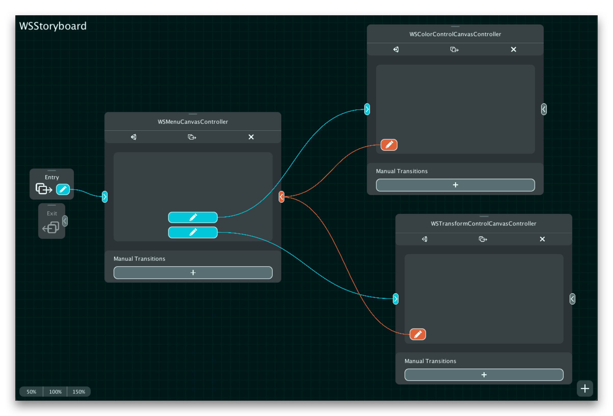
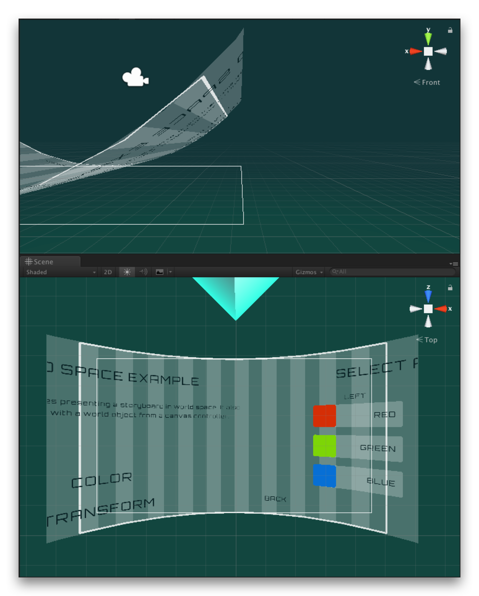
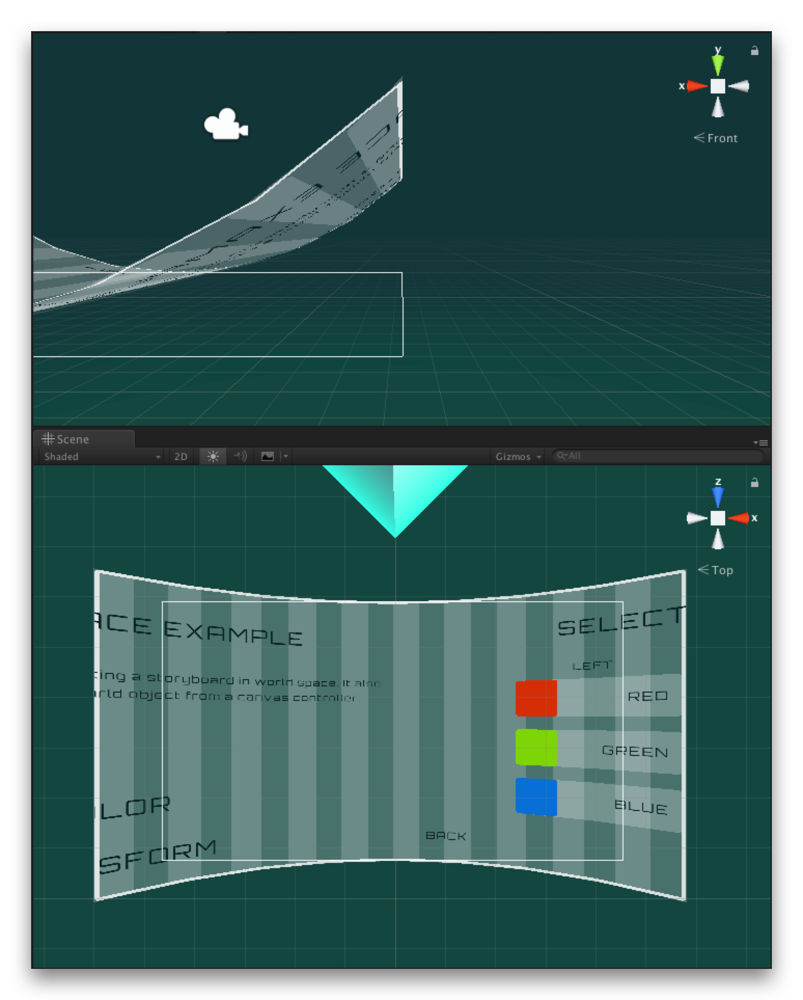

Using Curved UI with Canvas Flow
Curved world-space user interfaces are becoming increasingly common with the growth of XR games and applications. With this growth, the Curved UI asset on the Asset Store has emerged as a popular tool for achieving this effect by allowing you to bend/wrap a Unity Canvas.
Like Canvas Flow, Curved UI is also built atop Unity Canvas. As such it can be used with Canvas Flow to create not just a single curved canvas, but an entire user-interface flow that is curved in world-space. In this tutorial, we will demonstrate how to use the two assets together by modifying the World Space UI example included with Canvas Flow to have a curved canvas, as shown below.
Firstly, if you haven't done so already, make sure Curved UI is imported into your project in the usual way.
Example Overview
Open the WSExample scene (or duplicate it if you don't want to modify the example), located in Canvas Flow/Examples/3. World Space UI Example/Scenes. In this example our scene contains a cube object, which can have both its color and transform customized from the user-interface. The scene therefore also contains a storyboard, which consists of three screens (canvas controllers):
- a menu screen to select the customization option.
- a color-control screen to change the cube's color.
- a transform-control screen to change the cube's position and scale.

This storyboard is being presented in World Space and has been positioned slightly in front of the cube object to give the impression of a control panel.
Curve The Canvas
To make the storyboard's world canvas curved, select the Storyboard game object, which has the world canvas, and add a CurvedUISettings component to it. You'll notice that Curved UI will immediately curve your world canvas. However, if you run the scene at this point, any presented canvas controllers will not be curved. This is because Curved UI requires instantiated elements to have a CurvedUIVertexEffect component.
Note: If you enter play-mode at this point, it may appear that your canvases are in fact being curved correctly. This is likely because you have the CurvedUISettings game object selected, which causes the Curved UI editor to automatically add the required CurvedUIVertexEffect for you. If you deselect the game object or create a build, you'll likely see that the presented canvases are not curved and why the following step is necessary.
Conveniently, Curved UI provides a helper function, AddEffectToChildren(), to add the CurvedUIVertexEffect to all necessary components for us at runtime. This means that we don't have to modify any of our canvas controllers to make them curved, ensuring that they can still be used in other storyboards that perhaps aren't curved, such as a screen-space interface flow.
To implement this, we will use the storyboard's events to be notified each time it presents a canvas controller. In response, we can call the AddEffectToChildren() function to ensure the presented canvas, and all its elements, will be curved. Therefore, create the following script, add it to a new game object in the scene, and drag your CurvedUISettings component that we added earlier onto the curvedUISettings field.
using CurvedUI;
using P7.CanvasFlow;
using UnityEngine;
public class AddCurvedUIEffectOnTransition : MonoBehaviour
{
public CurvedUISettings curvedUISettings;
public void OnStoryboardWillPresentInitialTransition(StoryboardTransition transition)
{
curvedUISettings.AddEffectToChildren();
}
public void OnStoryboardWillPerformTransition(StoryboardTransition transition)
{
// Is the transition downstream (a presentation)?
if (transition.direction == StoryboardTransitionDirection.Downstream)
{
curvedUISettings.AddEffectToChildren();
}
}
}
Add these functions to the relevant storyboard events, as shown below…
…and now each time the storyboard presents a canvas, Curved UI will ensure all the necessary elements are curved. And with that we have a curved, world-space, user-interface flow!
Additional Considerations
Preserve Aspect
Depending on the design of your interface, as well as the type of transition animator you are using, you may want to disable the CurvedUISettings component's Preserve Aspect property. If Preserve Aspect is selected, the world canvas will be resized to maintain its aspect-ratio after accounting for the curvature. This can sometimes cause canvas controllers to not be clipped exactly to the containing world canvas' rect due to the Mask2D component operating on the two-dimensional rect.
To illustrate, consider the two following images, showing a horizontal slide transition in progress. The first image is with Preserve Aspect enabled. You can see how the world canvas is slightly smaller than its two-dimensional rect to preserve the aspect-ratio when curved, causing the child canvases to be clipped incorrectly during transition. In contrast the second image is with Preserve Aspect disabled. You can see how the curved world canvas now fills the two-dimensional rect, causing the child canvases to be clipped correctly.
|  |  |
One-frame flicker
If you see a one-frame flicker when animating, this is likely due to the curvature calculation happening one frame after the animation has moved the canvas. The developer of Curved UI is addressing this issue in a future update, so in the meantime you can easily fix this yourself by changing the CurvedUIVertexEffect's Update() method to LateUpdate().
Disclosure: This post may contain affiliate links, which means I may receive a commission if you click a link and purchase something that I have recommended. While clicking these links won't cost you any money, they will help me fund my development projects while recommending great assets!